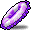
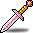

Odd Jobs
There are more odd jobs than I can count, and then some!Note that this list is inherently incomplete, because new odd jobs could potentially be invented. Also note that the “Stat constraints” reference base stats/abilities; that is, the stats themselves without any bonuses from equipment or buffs. The “Notable equipment” for each job intentionally excludes equipment items that are not particularly unique to the job. For example, many of the same weapons (those swords, axes, blunt weapons, spears, polearms, and daggers that lack job requirements) are used by almost all melee-oriented odd jobs (e.g. permabeginner) in common. As a result, unless these weapons are useful for other reasons that are somewhat special to the job in question, they are not listed under “Notable equipment”.
- Camper
- Magelander
- Islander
- Besinner
- Permabeginner
- HP Warrior
- LUK Warrior
- Dagger Warrior
- DEX Warrior
- STR Mage
- Gish
- LUK Gish
- LUK Mage
- Woodsman
- Bow-whacker
- Grim Reaper
- STR Assassin
- Blood Bandit
- Brigand
- LUK Bucc
- Swashbuckler
Camper
↑ Back to top ↑Possible job progressions:
- Beginner
Location: Training Camp
Primary stats: STR, DEX
Attacks:
- [basic attack]
Notable equipment:
 Sword
Sword Wooden Club
Wooden Club Hand Axe
Hand Axe
Notes
The camper experience varies significantly based on what version of the Training Camp they are subjected to. Later versions introduced a more clear “Training Camp” aesthetic, with custom-textured and custom-built maps, the “green apple suit” that the camper is forced to wear, and different mobs from the Jr. Sentinels of earlier versions.
Campers can only fight mobs that give 1 EXP each, making them extraordinarily time-consuming to train.
Magelander
↑ Back to top ↑Also known as: “Wand Islander”
Possible job progressions:
- Beginner
Location: Maple Island
Primary stats: STR, DEX | Secondary stats: INT, LUK
Attacks:
- [basic attack]
 Three Snails
Three Snails
Notable equipment:
 Metal Wand
Metal Wand Ice Jeans
Ice Jeans![Icon for Blue One-lined T-Shirt [M]](./img/items/1040013.png "Icon for Blue One-lined T-Shirt [M]") Blue One-lined T-Shirt [M]
Blue One-lined T-Shirt [M]![Icon for Red-Striped T-Shirt [F]](./img/items/1041012.png "Icon for Red-Striped T-Shirt [F]") Red-Striped T-Shirt [F]
Red-Striped T-Shirt [F] White Gomushin
White Gomushin Amethyst Earrings
Amethyst Earrings
Notes
Magelanders are defined by their use of the Metal Wand, a level 18 wand with no job requirements that drops from Red Snails. It requires 55 INT and 20 LUK to equip.
Islander
↑ Back to top ↑Possible job progressions:
- Beginner
Location: Maple Island
Primary stats: STR, DEX | Secondary stat: LUK
Attacks:
- [basic attack]
Notable equipment:
 Leather Purse
Leather Purse-
Ice Jeans
-
Blue One-lined T-Shirt [M]
-
Red-Striped T-Shirt [F]
-
White Gomushin
-
Amethyst Earrings
Besinner
↑ Back to top ↑Possible job progressions:
- Beginner
Primary stat: LUK
Attacks:
- [basic attack]
Notable equipment:
 Magical Mitten
Magical Mitten
Notes
Besinners are defined by their use of the Magical Mitten, a level 10 claw with no job requirements. There are sometimes other claws that can be used by beginners, but this will vary by implementation. Some implementations may not even have any claws usable by beginners — not even the Magical Mitten — and thus besinners are impossible in such implementations.
Depending on the implementation, besinners may only be able to throw Snowballs. They can possibly also throw arrows, and/or other throwing stars like Ilbis.
Permabeginner
↑ Back to top ↑Also known as: “Permanoob”, “Perma”
Possible job progressions:
- Beginner
Primary stat: STR | Secondary stat: DEX
Attacks:
- [basic attack]
Notable equipment:
![Icon for Frozen Tuna [level 20]](./img/items/1442018.png "Icon for Frozen Tuna [level 20]") Frozen Tuna [level 20]
Frozen Tuna [level 20] Sake Bottle
Sake Bottle Maroon Mop
Maroon Mop
HP Warrior
↑ Back to top ↑Also known as: “Blood Warrior”
Possible job progressions:
- Beginner → Warrior → Fighter → Crusader → Hero
- Beginner → Warrior → Page → White Knight → Paladin
Primary stat: HP | Secondary stats: STR, DEX
Stat constraints:
- STR = 35
- DEX = 4
- LUK = 4
Attacks:
 Power Guard
Power Guard Power Strike
Power Strike Slash Blast
Slash Blast
Notable skills:
- Power Guard
 Improved MaxHP Increase
Improved MaxHP Increase Rage
Rage Threaten
Threaten Armor Crash
Armor Crash Shout
Shout Magic Crash
Magic Crash
Notes
After achieving 35 base STR (necessary for first job advancement), the HP Warrior saves their AP until they have maxed out Improving MaxHP Increase, at which point all AP (and future AP) is spent on HP.
HP Warriors deal damage primarily via Power Guard, and as such, typically want to lower their WDEF as much as possible in order to maximize this damage.
LUK Warrior
↑ Back to top ↑Possible job progressions:
- Beginner → Warrior → Fighter → Crusader → Hero
- Beginner → Warrior → Page → White Knight → Paladin
- Beginner → Warrior → Spearman → Dragon Knight → Dark Knight
Primary stats: LUK, STR | Secondary stat: DEX
Stat constraints:
- STR = 35
- DEX = 4
Attacks:
- [basic attack]
- Power Strike
- Slash Blast
- Power Guard
 Panic: Sword
Panic: Sword Panic: Axe
Panic: Axe Coma: Sword
Coma: Sword Coma: Axe
Coma: Axe Charged Blow
Charged Blow Spear Crusher
Spear Crusher Pole Arm Crusher
Pole Arm Crusher Dragon Fury: Spear
Dragon Fury: Spear Dragon Fury: Pole Arm
Dragon Fury: Pole Arm Dragon Roar
Dragon Roar
Notable skills:
- Power Guard
- Improved MaxHP Increase
- Rage
 Iron Will
Iron Will Hyper Body
Hyper Body- Threaten
 Combo Attack
Combo Attack- Armor Crash
- Shout
 Fire Charge: Sword
Fire Charge: Sword Flame Charge: BW
Flame Charge: BW Ice Charge: Sword
Ice Charge: Sword Blizzard Charge: BW
Blizzard Charge: BW Thunder Charge: Sword
Thunder Charge: Sword Lightning Charge: BW
Lightning Charge: BW- Magic Crash
- Dragon Roar
 Power Crash
Power Crash
Notable equipment:
 Metal Axe
Metal Axe Wooden Sword
Wooden Sword Wooden Mallet
Wooden Mallet Spear
Spear Pole Arm
Pole Arm Maple Dragon Axe
Maple Dragon Axe Maple Doom Singer
Maple Doom Singer Maple Impaler
Maple Impaler Maple Scorpio
Maple Scorpio Trumpet
Trumpet Maple Glory Sword
Maple Glory Sword Maple Steel Axe
Maple Steel Axe Maple Soul Rohen
Maple Soul Rohen Maple Demon Axe
Maple Demon Axe Maple Havoc Hammer
Maple Havoc Hammer Maple Belzet
Maple Belzet Maple Soul Spear
Maple Soul Spear Maple Karstan
Maple Karstan Daiwa Sword
Daiwa Sword
Notes
LUK warriors are actually very similar to LUK mages, in that they essentially play like their non-odd-job counterparts, albeit considerably weaker. LUK warriors are, again like LUK mages, somewhat limited in their equipment choices because of their unusual AP allocation, but can nevertheless use job-appropriate weapons that enable them to make use of all of their skills.
Dagger Warrior
↑ Back to top ↑Possible job progressions:
- Beginner → Warrior → Fighter → Crusader → Hero
- Beginner → Warrior → Page → White Knight → Paladin
- Beginner → Warrior → Spearman → Dragon Knight → Dark Knight
Primary stats: STR, DEX
Attacks:
- [basic attack]
- Power Strike
- Slash Blast
- Power Guard
- Dragon Roar
Notable skills:
- Power Guard
- Improved MaxHP Increase
- Rage
- Iron Will
- Hyper Body
- Threaten
- Combo Attack
- Armor Crash
- Shout
- Magic Crash
- Dragon Roar
- Power Crash
Notable equipment:
 Fruit Knife
Fruit Knife Christmas Tree
Christmas Tree Field Dagger
Field Dagger Coconut Knife
Coconut Knife Iron Dagger
Iron Dagger Cass
Cass Korean Fan
Korean Fan Plastic Bottle
Plastic Bottle Sai
Sai Liu Bei Dagger
Liu Bei Dagger Serpent’s Coil
Serpent’s Coil Fan
Fan Kebob
Kebob Angelic Betrayal
Angelic Betrayal Cursayer
Cursayer Gold Double Knife
Gold Double Knife
Notes
The only restriction placed on dagger warriors is the reqirement that they exclusively use weapons that are daggers. This turns out to be quite the downside, because this locks them out of most of their skills.
Surprisingly, daggers that are exclusive to rogues and warriors actually progress all the way up to level 100, with the Gold Double Knife!
DEX Warrior
↑ Back to top ↑Possible job progressions:
- Beginner → Warrior → Fighter → Crusader → Hero
- Beginner → Warrior → Page → White Knight → Paladin
- Beginner → Warrior → Spearman → Dragon Knight → Dark Knight
Primary stats: DEX, STR | Secondary stat: LUK
Stat constraints:
- STR = 35
Attacks:
- [basic attack]
- Power Strike
- Slash Blast
- Power Guard
- Panic: Sword
- Panic: Axe
- Coma: Sword
- Coma: Axe
- Charged Blow
- Spear Crusher
- Pole Arm Crusher
- Dragon Fury: Spear
- Dragon Fury: Pole Arm
- Dragon Roar
Notable skills:
- Power Guard
- Improved MaxHP Increase
- Rage
- Iron Will
- Hyper Body
- Threaten
- Combo Attack
- Armor Crash
- Shout
- Fire Charge: Sword
- Flame Charge: BW
- Ice Charge: Sword
- Blizzard Charge: BW
- Thunder Charge: Sword
- Lightning Charge: BW
- Magic Crash
- Dragon Roar
- Power Crash
Notable equipment:
-
Metal Axe
-
Wooden Sword
-
Wooden Mallet
-
Spear
-
Pole Arm
-
Field Dagger
-
Maple Dragon Axe
-
Maple Doom Singer
-
Maple Impaler
-
Maple Scorpio
-
Trumpet
-
Maple Glory Sword
-
Maple Steel Axe
-
Maple Soul Rohen
-
Maple Demon Axe
-
Maple Havoc Hammer
-
Maple Belzet
-
Maple Soul Spear
-
Maple Karstan
-
Daiwa Sword
 Stonetooth Sword
Stonetooth Sword
Notes
DEX warriors are essentially a stronger variant of LUK warriors, because DEX actually contributes somewhat (although not nearly as much as STR) to their damage, unlike LUK.
DEX warriors are also notable for their ability to easily equip the Stonetooth Sword, a level 100 warrior-only two-handed sword that requires at least 120 DEX (but only 0 STR) to equip. The Stonetooth Sword is a viable and sought-after endgame weapon even for normal warriors.
STR Mage
↑ Back to top ↑Also known as: “Strength Mage”, “Battle Mage”, “STR Magician”
Possible job progressions:
- Beginner → Magician → Cleric → Priest → Bishop
- Beginner → Magician → I/L Wizard → I/L Mage → I/L Archmage
- Beginner → Magician → F/P Wizard → F/P Mage → F/P Archmage
Primary stat: STR | Secondary stats: DEX, INT, LUK
Stat constraints:
- INT = 20
- LUK = 4
Attacks:
- [basic attack]
Notable skills:
 Magic Guard
Magic Guard Meditation
Meditation Teleport
Teleport Heal
Heal Bless
Bless Holy Symbol
Holy Symbol Dispel
Dispel
Notable equipment:
 Mace
Mace Iron Mace
Iron Mace Fusion Mace
Fusion Mace Blue Snowshoes
Blue Snowshoes Flamekeeper Cordon
Flamekeeper Cordon Maple Magician Shield
Maple Magician Shield
Notes
STR mages largely play like “permabeginners, but with buffs”, although they can also have other utility skills, like Heal. For a more magically-oriented magician that still engages in melee, see the gish (and the LUK gish).
Gish
↑ Back to top ↑Also known as: “INT Gish”, “Mixed Attacker Mage”, “Mixed Attacker”, “Hybrid Mage”, “Hybrid Magician”
Possible job progressions:
- Beginner → Magician → Cleric → Priest → Bishop
- Beginner → Magician → I/L Wizard → I/L Mage → I/L Archmage
- Beginner → Magician → F/P Wizard → F/P Mage → F/P Archmage
Primary stats: STR, INT | Secondary stats: DEX, LUK
Stat constraints:
- STR ≥ INT
- LUK = 4
Attacks:
- [basic attack]
 Energy Bolt
Energy Bolt Magic Claw
Magic Claw Fire Arrow
Fire Arrow Poison Breath
Poison Breath Cold Beam
Cold Beam Thunder Bolt
Thunder Bolt- Heal
 Holy Arrow
Holy Arrow Explosion
Explosion Poison Mist
Poison Mist![Icon for Element Composition [F/P]](./img/skills/2111006.png "Icon for Element Composition [F/P]") Element Composition [F/P]
Element Composition [F/P] Ice Strike
Ice Strike Thunder Spear
Thunder Spear![Icon for Element Composition [I/L]](./img/skills/2211006.png "Icon for Element Composition [I/L]") Element Composition [I/L]
Element Composition [I/L] Shining Ray
Shining Ray
Notable skills:
- Magic Guard
- Meditation
- Teleport
- Heal
- Bless
- Holy Symbol
- Dispel
Notable equipment:
 Sky Blue Umbrella
Sky Blue Umbrella Green Umbrella
Green Umbrella Fruity Bamboo
Fruity Bamboo Light Purple Umbrella
Light Purple Umbrella Green Paint Brush
Green Paint Brush Pumpkin Lantern
Pumpkin Lantern Flaming Katana
Flaming Katana Yellow Umbrella
Yellow Umbrella-  Purple Tube
 Beige Umbrella
Beige Umbrella-  Diao Chan Sword
-
Kebob
 Black Umbrella
Black Umbrella Crimson Arcglaive
Crimson Arcglaive-
Blue Snowshoes
-
Flamekeeper Cordon
 Glitter Gloves
Glitter Gloves-
Maple Magician Shield
Notes
Gishes attack both with melee (similarly to the closely related STR mage) and with spells.
Gishes use INT (unlike LUK mages) as their primary casting stat, but have this INT limited by their STR. See the LUK gish for a variant that is more similar to LUK mages, but naturally weaker than this kind of gish.
LUK Gish
↑ Back to top ↑Also known as: “LUK Mixed Attacker Mage”, “LUK Mixed Attacker”, “LUK Hybrid Mage”, “LUK Hybrid Magician”
Possible job progressions:
- Beginner → Magician → Cleric → Priest → Bishop
- Beginner → Magician → I/L Wizard → I/L Mage → I/L Archmage
- Beginner → Magician → F/P Wizard → F/P Mage → F/P Archmage
Primary stats: STR, LUK | Secondary stats: DEX, INT
Stat constraints:
- INT = 20
Attacks:
- [basic attack]
- Energy Bolt
- Magic Claw
- Fire Arrow
- Poison Breath
- Cold Beam
- Thunder Bolt
- Heal
- Holy Arrow
- Explosion
- Poison Mist
- Element Composition [F/P]
- Ice Strike
- Thunder Spear
- Element Composition [I/L]
- Shining Ray
Notable skills:
- Magic Guard
- Meditation
- Teleport
- Heal
- Bless
- Holy Symbol
- Dispel
Notable equipment:
-
Sky Blue Umbrella
-
Green Umbrella
-
Fruity Bamboo
-
Light Purple Umbrella
-
Green Paint Brush
-
Pumpkin Lantern
-
Flaming Katana
-
Yellow Umbrella
- Purple Tube
-
Beige Umbrella
- Diao Chan Sword
-
Kebob
-
Black Umbrella
-
Crimson Arcglaive
-
Blue Snowshoes
-
Flamekeeper Cordon
-
Glitter Gloves
-
Maple Magician Shield
Notes
LUK gishes attack both with melee (similarly to the closely related STR mage) and with spells.
LUK gishes use LUK (unlike ordinary gishes) as their primary casting stat. See the gish for a variant that is generally stronger than the LUK gish.
LUK Mage
↑ Back to top ↑Also known as: “LUK Magician”, “INTless Mage”, “INTless Magician”, “Pure LUK Mage”, “Pure LUK Magician”
Possible job progressions:
- Beginner → Magician → Cleric → Priest → Bishop
- Beginner → Magician → I/L Wizard → I/L Mage → I/L Archmage
- Beginner → Magician → F/P Wizard → F/P Mage → F/P Archmage
Primary stat: LUK | Secondary stat: INT
Stat constraints:
- INT = 20
- STR = 4
- DEX = 4
Attacks:
- Energy Bolt
- Magic Claw
- Fire Arrow
- Poison Breath
- Cold Beam
- Thunder Bolt
- Heal
- Holy Arrow
- Explosion
- Poison Mist
- Element Composition [F/P]
- Ice Strike
- Thunder Spear
- Element Composition [I/L]
- Shining Ray
Notable skills:
- Magic Guard
- Meditation
- Teleport
- Heal
- Bless
- Holy Symbol
- Dispel
Notable equipment:
-
Sky Blue Umbrella
 Wooden Wand
Wooden Wand-
Green Umbrella
-
Fruity Bamboo
-
Light Purple Umbrella
-
Green Paint Brush
 Poison Mushroom
Poison Mushroom-
Pumpkin Lantern
 Maple Staff
Maple Staff-
Flaming Katana
-
Yellow Umbrella
 Maple Lama Staff
Maple Lama Staff Nocturnal Staff
Nocturnal Staff- Purple Tube
 Streetlight
Streetlight-
Beige Umbrella
- Diao Chan Sword
 Heart Staff
Heart Staff Heart Wand
Heart Wand Maple Wisdom Staff
Maple Wisdom Staff Maple Shine Wand
Maple Shine Wand Elemental Wand 1
Elemental Wand 1 Elemental Wand 2
Elemental Wand 2 Elemental Wand 3
Elemental Wand 3 Elemental Wand 4
Elemental Wand 4-
Kebob
-
Black Umbrella
 Pyogo Mushroom
Pyogo Mushroom-
Crimson Arcglaive
 Doomsday Staff
Doomsday Staff Elemental Staff 1
Elemental Staff 1 Elemental Staff 2
Elemental Staff 2 Elemental Staff 3
Elemental Staff 3 Elemental Staff 4
Elemental Staff 4 Elemental Wand 5
Elemental Wand 5 Elemental Wand 6
Elemental Wand 6 Elemental Wand 7
Elemental Wand 7 Elemental Wand 8
Elemental Wand 8-
Blue Snowshoes
-
Flamekeeper Cordon
-
Glitter Gloves
-
Maple Magician Shield
Notes
LUK mages play very similarly to ordinary mages, although obviously they are considerably weaker, and are also incapable of equipping items with significant INT requirements.
Woodsman
↑ Back to top ↑Also known as: “STR Archer”, “Strength Archer”
Possible job progressions:
- Beginner → Archer → Hunter → Ranger → Bowmaster
- Beginner → Archer → Crossbowman → Sniper → Marksman
Primary stat: STR | Secondary stat: DEX
Stat constraints:
- DEX = 25
Attacks:
- [basic attack]
 Double Shot
Double Shot Arrow Bomb
Arrow Bomb Iron Arrow
Iron Arrow Power Knock-Back
Power Knock-Back Strafe
Strafe Inferno
Inferno Arrow Rain
Arrow Rain Blizzard
Blizzard Arrow Eruption
Arrow Eruption
Notable skills:
 The Blessing of Amazon
The Blessing of Amazon Focus
Focus Critical Shot
Critical Shot Puppet
Puppet- Blizzard
Notable equipment:
 War Bow
War Bow Maple Bow
Maple Bow Maple Soul Searcher
Maple Soul Searcher Maple Kandiva Bow
Maple Kandiva Bow Bow of Magical Destruction
Bow of Magical Destruction Crossbow
Crossbow Maple Crow
Maple Crow Maple Crossbow
Maple Crossbow Maple Nishada
Maple Nishada-
Wooden Sword
-
Metal Axe
-
Wooden Mallet
 Monkey Wrench
Monkey Wrench Green Snowshoes
Green Snowshoes
Notes
The woodsman’s versatility can allow them to switch between ranged and melee physical combat.
Bow-whacker
↑ Back to top ↑Also known as: “Crossbow-whacker”, “Bow-whacking Woodsman”, “Crossbow-whacking Woodsman”, “Knockback Archer”
Possible job progressions:
- Beginner → Archer → Hunter → Ranger → Bowmaster
- Beginner → Archer → Crossbowman → Sniper → Marksman
Primary stat: STR | Secondary stat: DEX
Attacks:
- [basic attack]
- Power Knock-Back
Notable skills:
- The Blessing of Amazon
- Focus
- Puppet
Notable equipment:
-
War Bow
-
Maple Bow
-
Maple Soul Searcher
-
Maple Kandiva Bow
-
Bow of Magical Destruction
-
Crossbow
-
Maple Crow
-
Maple Crossbow
-
Maple Nishada
-
Green Snowshoes
Notes
Bow-whackers do not have the stat constraint that woodsmen have, because they are disallowed from shooting projectiles, and disallowed from using Soul Arrow. They can only deal damage by whacking monsters with their (cross)bow.
Grim Reaper
↑ Back to top ↑Also known as: “Scythe Rogue”, “Scythe Thief”
Possible job progressions:
- Beginner → Rogue → Assassin → Hermit → Nightlord
- Beginner → Rogue → Bandit → Chief Bandit → Shadower
Primary stat: STR | Secondary stats: DEX, LUK
Attacks:
- [basic attack]
 Steal
Steal Meso Explosion
Meso Explosion
Notable skills:
 Nimble Body
Nimble Body Disorder
Disorder Dark Sight
Dark Sight- Steal
 Haste
Haste Flash Jump
Flash Jump Alchemist
Alchemist Meso Up
Meso Up Shield Mastery
Shield Mastery Meso Guard
Meso Guard
Notable equipment:
 Scythe
Scythe Maple Thief Shield
Maple Thief Shield Black Snowshoes
Black Snowshoes
Notes
Grim reapers are characterised and defined by their exclusive use of the Scythe, a level 15 one-handed axe that requires its wielder to be a rogue and to have at least 35 LUK and 30 DEX.
STR Assassin
↑ Back to top ↑Also known as: “STR Sin”, “Strength Assassin”
Possible job progressions:
- Beginner → Rogue → Assassin → Hermit → Nightlord
Primary stat: STR | Secondary stats: DEX, LUK
Stat constraints:
- DEX = 25
- LUK = 4
Attacks:
- [basic attack]
Notable skills:
- Nimble Body
- Disorder
- Dark Sight
 Haste
Haste- Flash Jump
- Alchemist
- Meso Up
Notable equipment:
-
Wooden Sword
-
Metal Axe
-
Wooden Mallet
-
Monkey Wrench
-
Maple Thief Shield
-
Black Snowshoes
Notes
STR assassins cannot put any SP into Double Stab.
STR assassins are somewhat similar to brigands: they essentially play like more mobile permabeginners, with some neato utility skills. Later on, Flash Jump in particular is a highlight. However, STR assassins lack both Steal and Meso Explosion.
Blood Bandit
↑ Back to top ↑Also known as: “Blood Dit”, “HP Bandit”, “HP Dit”
Possible job progressions:
- Beginner → Rogue → Bandit → Chief Bandit → Shadower
Primary stat: HP | Secondary stats: LUK, DEX, STR
Stat constraints:
- DEX = 25
- LUK = 4
- STR = 4
Attacks:
- Meso Explosion
- [basic attack]
 Double Stab
Double Stab Savage Blow
Savage Blow- Steal
 Band of Thieves
Band of Thieves Assaulter
Assaulter
Notable skills:
- Meso Guard
- Nimble Body
- Disorder
- Dark Sight
- Steal
- Haste
- Shield Mastery
Notable equipment:
-
Fruit Knife
-
Christmas Tree
-
Korean Fan
-
Plastic Bottle
 Maple Wagner
Maple Wagner-
Liu Bei Dagger
 Maple Asura Dagger
Maple Asura Dagger Maple Dark Mate
Maple Dark Mate-
Kebob
-
Maple Thief Shield
-
Black Snowshoes
Notes
Blood bandits are essentially ordinary bandits (in the sense that they can use daggers and stabbing skills, and thus all bandit/chief bandit/shadower skills) that trade off the large majority of their melee power in exchange for extreme tankiness. Because all of their APs are spent on HP, and because they gain access to Meso Guard in third job, blood bandits are virtually unkillable. However, naturally enough, their melee capabilities are typically very subpar, and they are more or less built around the use of Meso Explosion, which thankfully does not scale with any of the bandit’s stats, and also demands some tankiness to allow the bandit to get up close in order to place, and then explode, mesos.
Brigand
↑ Back to top ↑Possible job progressions:
- Beginner → Rogue → Bandit → Chief Bandit → Shadower
Primary stat: STR | Secondary stats: DEX, LUK
Stat constraints:
- DEX = 25
- LUK = 4
Attacks:
- [basic attack]
- Steal
- Meso Explosion
Notable skills:
- Nimble Body
- Disorder
- Dark Sight
- Steal
- Haste
- Meso Guard
- Shield Mastery
Notable equipment:
-
Wooden Sword
-
Metal Axe
-
Wooden Mallet
-
Monkey Wrench
-
Maple Wagner
-
Maple Asura Dagger
-
Maple Dark Mate
-
Maple Thief Shield
-
Black Snowshoes
Notes
Brigands cannot put any SP into stabbing skills, like Double Stab. Steal does not count as a “stabbing skill” for the purpose of this definition.
Brigands essentially play like more mobile permabeginners, with some neato utility skills, to boot. Later, brigands get access to a radically different attacking skill: Meso Explosion.
LUK Bucc
↑ Back to top ↑Also known as: “Lucc Bucc”, “LUK Brawler”, “LUK Marauder”, “LUK Buccaneer”
Possible job progressions:
- Beginner → Pirate → Brawler → Marauder → Buccaneer
Primary stats: LUK, STR | Secondary stat: DEX
Stat constraints:
- STR = 4
- DEX = 20
Attacks:
- [basic attack]
 Sommersault Kick
Sommersault Kick Flash Fist
Flash Fist Corkscrew Blow
Corkscrew Blow Backspin Blow
Backspin Blow Double Uppercut
Double Uppercut Shockwave
Shockwave Energy Drain
Energy Drain Energy Blast
Energy Blast
Notable skills:
 Bullet Time
Bullet Time Improve MaxHP
Improve MaxHP Oak Barrel
Oak Barrel- Corkscrew Blow
- Backspin Blow
- Double Uppercut
 Transformation
Transformation Stun Mastery
Stun Mastery Energy Charge
Energy Charge- Energy Drain
Notable equipment:
 Steel Knuckler
Steel Knuckler Maple Knuckle
Maple Knuckle Maple Storm Finger
Maple Storm Finger Maple Golden Claw
Maple Golden Claw Purple Snowshoes
Purple Snowshoes
Notes
LUK buccs are essentially the pirate version of LUK warriors, although they have a hard time getting equipped, due to the paucity of knucklers that lack stat requirements.
Swashbuckler
↑ Back to top ↑Also known as: “STR Gunslinger”, “Strength Gunslinger”, “STR Slinger”, “STR Sair”
Possible job progressions:
- Beginner → Pirate → Gunslinger → Outlaw → Corsair
Primary stat: STR | Secondary stat: DEX
Stat constraints:
- DEX = 20
Attacks:
- Sommersault Kick
 Double Shot
Double Shot Grenade
Grenade Invisible Shot
Invisible Shot Ice Splitter
Ice Splitter
Notable skills:
- Bullet Time
 Blank Shot
Blank Shot Wings
Wings Recoil Shot
Recoil Shot Octopus
Octopus Gaviota
Gaviota Homing Beacon
Homing Beacon
Notable equipment:
 Pistol
Pistol Maple Gun
Maple Gun Maple Storm Pistol
Maple Storm Pistol Maple Canon Shooter
Maple Canon Shooter-
Purple Snowshoes
Notes
Swashbucklers cannot put any SP into punching abilities. Being gunslingers, however, they could only have access to Flash Fist anyways.
Swashbucklers tend to be quite similar to woodsmen in their ability to effectively melee and to somewhat effectively range, but differ in their unique skillset, mobility, and ability to use Somersault Kick in melee.